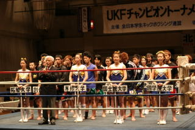

たまプラーザ 若木２１ ３階ボクシング場
月～金 １７：００～１９：００
渋谷 若木会館 ４階小フロアー
月～金 １６：００～１８：００
２００８年度 ６月１５日(日) 第６８回全日本学生キックボクシング選手権大会 ８月３１日(日) ２００８年度チャンピオン決定戦予選 ９月２８日(日) 第２２回新人戦大会 １１月１日(土) 第６９回全日本学生キックボクシング選手権大会 ６階級チャンピオン決定戦
キックボクシングは、大學から始めて日本一に なることが出来る競技です。 それに、サークルとは違った人間関係を築くことができるのも魅力の一つです。